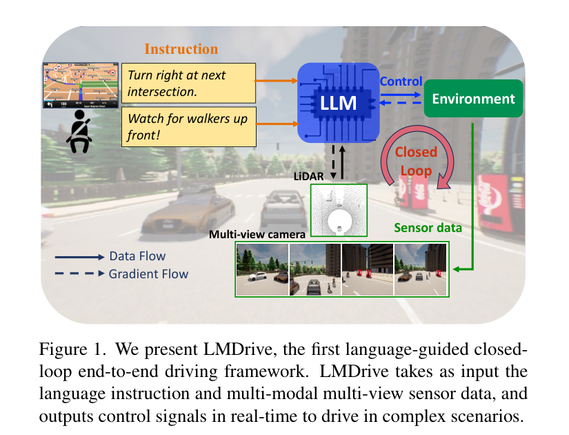
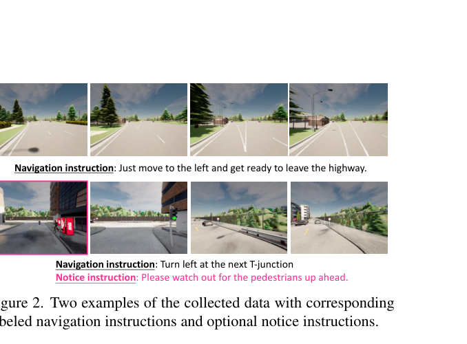
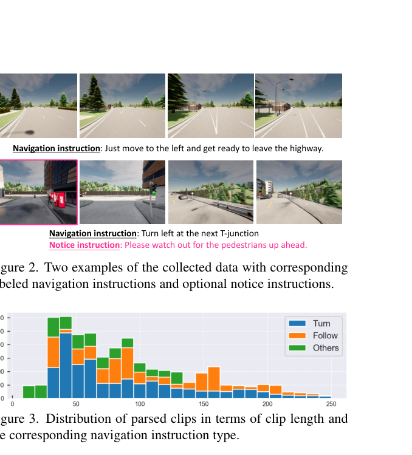

LMDrive: Closed-Loop End-to-End Driving with Large Language Models
LMDrive 将自然语言导航/提醒指令、多视角相机与 LiDAR 观测统一送入视觉编码器、Q-Former 与 LLM 驱动头，直接在 CARLA 闭环环境中输出控制量，从而把“语言可交互”纳入端到端驾驶评测。
Closed-loop driving、LangAuto、language-guided driving、multi-view sensor fusion、Q-Former、LLaVA/Vicuna/LLaMA、CARLA、instruction following
VLA / LLM 闭环端到端驾驶
是，代码、模型和数据集公开
很高：适合作为自动驾驶 VLA 闭环基线和语言指令数据集基线
计划公网链接：https://ixgnozeix.github.io/paper-reports/report/lmdrive/
1. 论文速览
这篇工作解决的不是单帧问答，而是语言条件下的闭环驾驶：车辆在仿真环境中持续接收传感器观测和导航/notice 指令，模型需要把指令约束、道路状态和动态障碍物整合成低层控制。论文贡献包括 LMDrive 模型、约 64K instruction-following clips 与 464K notice instructions，以及 LangAuto / LangAuto-Notice 基准。论文报告 LLaVA-v1.5 作为语言骨干在 LangAuto 设定中 DS=36.2±2.3、RC=46.5±4.3、IS=0.81±0.03；去掉视觉预训练后 DS 降到 16.9±5.1，说明视觉预训练和跨模态桥接不是装饰模块，而是闭环可驾驶性的关键来源。
2. 研究问题与动机
传统闭环端到端驾驶通常只接受传感器、目标点或离散命令，难以处理“下一路口右转，但注意前方行人”这类人类自然表达。LMDrive 的问题定义把语言从辅助解释升级为行动条件：导航软件和乘客都能以自然语言改变驾驶意图，模型必须在控制闭环中执行，而不是离线生成文本。显而易见的替代路线是把语言先解析成离散 route command 再交给普通 planner，但这样会丢失 notice、风险提醒和人类偏好中的软约束。论文因此将语言 token 和视觉 token 共同进入 LLM 周边结构，让模型在每一帧以历史观测和当前指令共同决定动作。
4. 方法详解
模型由视觉编码器、Q-Former、LLM/tokenizer 和动作适配头构成。多视角相机和 LiDAR 首先被视觉编码器转成场景 token；语言指令经 tokenizer 进入 LLM 语义空间；Q-Former 承担视觉到语言空间的压缩与对齐；动作头将 LLM 侧隐状态映射为低层控制。训练分为视觉编码器预训练与 instruction finetuning：前者用原始驾驶数据学习场景理解，后者用指令-轨迹片段学习语言条件控制。推理时模型滚动接收历史传感器序列，压制闭环累计误差。复现时不能只跑单帧预测，必须在 CARLA/LangAuto 中跑 run_evaluation.sh，观察 DS、RC、IS 和各类碰撞/违规指标。
5. 实验与结果
核心实验是 LangAuto 系列闭环评测。论文比较了 LLaMA、LLaMA2、Vicuna、Vicuna-v1.5、LLaVA-v1.5 等语言骨干，并做了 Q-Former、BEV token、视觉预训练消融。Table 2/3 显示 LLaVA-v1.5 在 LangAuto 子设置中最高，去掉 Q-Former、去掉 BEV token 或去掉视觉预训练都会降低 DS/RC/IS，其中视觉预训练下降最大。LangAuto-Notice 进一步测试 misleading 或安全提醒指令下的鲁棒性：系统需要拒绝不安全提示并执行场景约束内的安全动作。证据缺口在于结果主要来自 CARLA 合成闭环，真实车泛化还没有直接验证。
6. 复现要点
最小复现路径是：安装 CARLA 0.9.10.1 与项目 environment.yml，下载作者发布的模型与 LangAuto 数据，设置 SCENARIOS 和 ROUTES 后运行 leaderboard/scripts/run_evaluation.sh。若显存或时间有限，先跑 LangAuto-Tiny / Short；完整长路线评测需要稳定 CARLA 服务和较长仿真时间。阻塞点包括 CARLA 版本、ScenarioRunner/Leaderboard 兼容性、模型权重下载、LiDAR/多视角输入预处理。验收标准不是 loss，而是 DS、RC、IS 以及碰撞/红灯/越界等闭环指标能复现论文趋势。
7. 分析、局限与边界
最有价值的地方是把“语言可交互”变成闭环控制问题，而不是把 VLM 当解释头。论文证据能支持“语言骨干与跨模态桥接有用”，但不能证明 LLM 已掌握真实世界驾驶常识；CARLA 中的长尾和真实道路的社会交互仍有鸿沟。可改进方向包括接入更强 temporal memory、用真实驾驶视频做 sim2real 对齐、将 notice 指令和安全约束显式转为 verifier，并用世界模型在闭环前模拟多种后果。
8. 组会问答准备
A：因为 LangAuto 包含自然语言导航、notice 和误导/安全相关表达，模型需要在闭环中共同考虑传感器状态和指令，而不是离线解析一个离散动作。
A：它压缩并对齐视觉/BEV token 到 LLM 可使用的语义空间；消融中去掉 Q-Former 会降低 DS 和 RC。
A：Driving Score、Route Completion、Infraction Score 及碰撞/红灯/越界细分指标，因为这些反映闭环安全与任务完成，而非单步轨迹误差。
A：实验主要在 CARLA/LangAuto，真实道路传感器噪声、地图差异和交互行为没有被充分覆盖。
A：先跑作者 tiny/short 路线确认环境，再跑 LLaVA-v1.5 基线与 w/o visual pre-training 消融，验证模块趋势。
9. 补充图解与附录证据



我的阅读笔记
可以把 LMDrive 作为“语言闭环驾驶”的基础表格项；后续创新可接入世界模型作为 safety rollout verifier，或者把 notice 指令转成可验证约束，减少 LLM 幻觉直接影响控制。